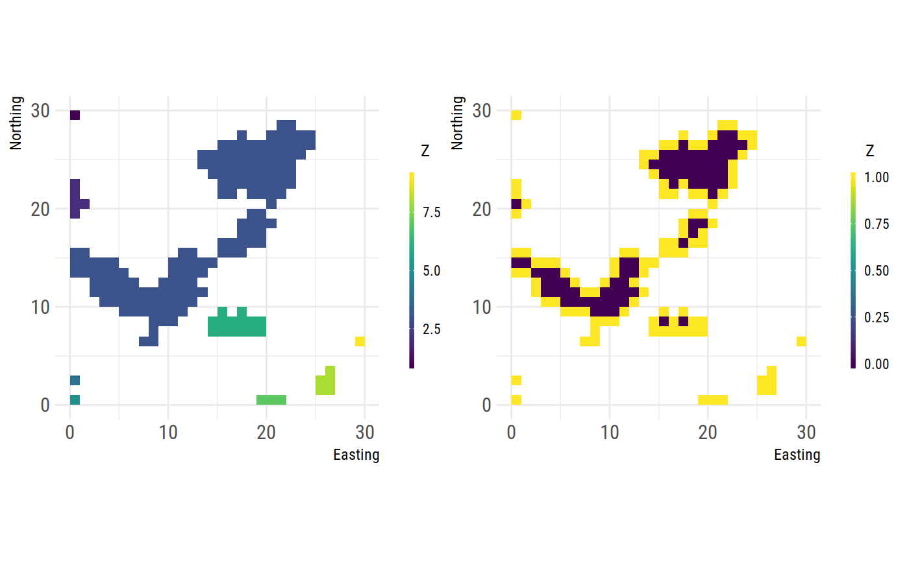

vignettes/articles/comparing_fragstats_landscapemetrics.Rmd
comparing_fragstats_landscapemetrics.RmdThere are a few important differences between FRAGSTATS and landscapemetrics that you should be aware of, if you either compare results between the two or use both of the tools:
We thoroughly compared each our implemented landscape metrics against the results from FRAGSTATS and will give you here a list with why we think there are differences in the results.
FRAGSTATS is unfortunately not an open-source project, so we can’t definetly say some of the metrics have bugs, but we try to show on small examples why we think there could be some of them.
Metric based on core metric, which already shows a malfunction in FRAGSTATS. Therefore most likely just a error propagation starting there.
Patches with 1 cell get a CIRCLE metric of 0, however the definition of the metric is:
CIRCLE equals 1 minus patch area (m2) divided by the area (m2) of the smallest circumscribing circle. (…)
The smallest circle around a quadrat should not have the same area as the quadrat, which is the case in FRAGSTATS:
## [1] 0.0001 0.0001 0.0001 0.0001 0.0001 0.0001 0.0002 0.0002 0.0002 0.0003
## [11] 0.0003 0.0003 0.0003 0.0003 0.0004 0.0005 0.0005 0.0007 0.0009 0.0010
## [21] 0.0014 0.0024 0.0035 0.0057 0.0098 0.0148 0.0457## [1] 0.0000 0.0000 0.0000 0.0000 0.0000 0.0000 0.3144 0.3634 0.4907 0.4907
## [11] 0.4907 0.5103 0.5225 0.5225 0.5416 0.5520 0.5544 0.5796 0.6180 0.6180
## [21] 0.6180 0.6255 0.6658 0.6817 0.6850 0.7783 0.8112Further points:
The core metric is defined as:
CORE equals the area (m2) within the patch that is further than the specified depth-of-edge distance from the patch perimeter, […]
This is a visual aid to help understand how we implemented the core metric:
library(raster)
library(patchwork)
# class 1
class_1 <- cclabel(landscape)[[1]]
# core area of every patch in class 1, 1 = Edge, 0 = Core
core <- boundaries(class_1, directions = 4)
# the left plot is class 1 of our landscape,
# the right plot show the core area of these patches (blueish color)
landscapetools::util_plot(class_1) +
landscapetools::util_plot(core)
We look at each patch of every class and count the cells that have 4 neighbors with the value of the specific class.
However, while we can proof that our method works as description of the core metric in the FRAGSTATS manual the results of the FRAGSTATS software itself can not be replicated.
From the FRAGSTATS (2015) manual:
GYRATE = 0 when the patch consists of a single cell
… however, FRAGSTATS returns values of 0.5 for patches with a single cell:
## [1] 0.0001 0.0001 0.0001 0.0001 0.0001 0.0001 0.0002 0.0002 0.0002 0.0003
## [11] 0.0003 0.0003 0.0003 0.0003 0.0004 0.0005 0.0005 0.0007 0.0009 0.0010
## [21] 0.0014 0.0024 0.0035 0.0057 0.0098 0.0148 0.0457## [1] 0.5000 0.5000 0.5000 0.5000 0.5000 0.5000 0.5000 0.5000
## [9] 0.6449 0.6449 0.6667 0.6667 0.6667 0.7071 0.7071 0.8493
## [17] 0.9779 0.9921 1.2400 1.2531 1.6339 2.4917 2.5116 3.1784
## [25] 6.2767 8.6143 11.2509There is a mixup between hectare and meter in documentation and code of FRAGSTATS. The program uses hectare, whereas the documentation states in the formula square meter.
We implemented it with square meters, but the result is in principale correct:
# results from fragstats
fragstats_patch_landscape_para <- fragstats_patch_landscape$PARA
#calculate para metrics
landscapemetrics_patch_landscape_para <- lsm_p_para(landscape)
# compare and multiply by 10000 to get hectare
fragstats_patch_landscape_para %in%
round((landscapemetrics_patch_landscape_para$value * 10000), 4)## [1] TRUE TRUE TRUE TRUE TRUE TRUE TRUE TRUE TRUE TRUE TRUE TRUE TRUE TRUE
## [15] TRUE TRUE TRUE TRUE TRUE TRUE TRUE TRUE TRUE TRUE TRUE TRUE TRUE